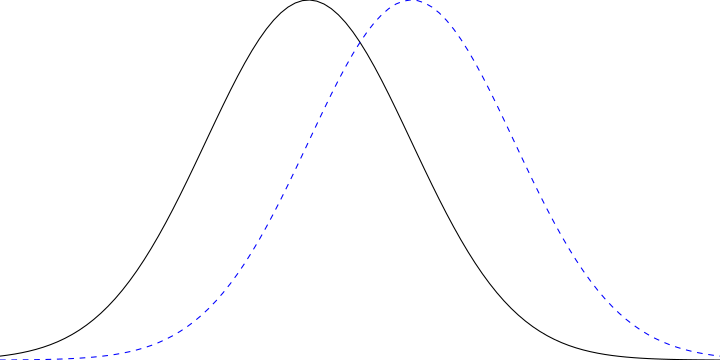
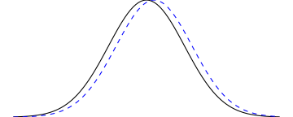
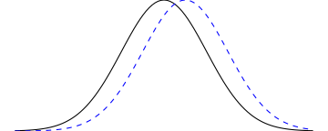

10|HYPOTHESIS TESTING
part 2
Overview
Inferential errors
- Hypothesis testing is an inferential process
- Incorrect inferences are possible
| Actual situation | |||
|---|---|---|---|
| \(H_0\) true | \(H_0\) false | ||
|
Researcher’s Decision |
Reject \(H_0\) |
Type 1 error \(\alpha\) |
Correct |
| Fail to reject \(H_0\) | Correct |
Type 2 error \(\beta\) |
|
Type 1 error
- If \(H_0\) is true…
Inferential errors
- Boy who cried wolf
- Villagers make Type 1 error (false positive)
- Type 2 error (false negative)
- In that order
Effect size
- Significant effects are not always substantial
- As sample size increases, standard error of the mean decreases
- Tiny treatment effect might come out as “statistically significant”
- Need to consider effect size
- How big is the treatment effect?
- Quantifies the absolute magnitude of a treatment effect, independent of sample size



Quantifying effect size
- One measure: Cohen’s \(d\)
- Quantifies the absolute magnitude of a treatment effect, independent of sample size
- Measures effect size in terms of standard deviation
- \(d = 1.00\): treatment changed \(\mu\) by 1 SD
\[\text{Cohen's } d = \dfrac{\text{mean difference}}{\text{standard deviation}} = \dfrac{\mu_{treatment} - \mu_{no \ treatment}}{\sigma}\]
For \(z\)-tests:
\[\text{Estimated Cohen's }d = \dfrac{\text{mean difference}}{\text{standard deviation}} = \dfrac{M - \mu}{\sigma}\]
Interpreting Cohen’s \(d\)
- Cohen’s rules of thumb
| \(d\) | Interpretation |
|---|---|
| 0.2 | Small |
| 0.5 | Medium |
| 0.8 | Large |
Effect size & sample size
- SAT scores: \(\mu = 500; \sigma = 100\)
- Administer treatment (banana); \(M = 501\)
- Significant? \((\alpha = .05\) two-tailed; critical values \(z = \pm 1.96)\)
- Substantial? (effect size)
With 50 participants…
\[z = \dfrac{501 - 500}{100 / \sqrt{50}} = 0.06\\ d = \dfrac{501 - 500}{100} = 0.01\]
With 50,000 participants…
\[z = \dfrac{501 - 500}{100 / \sqrt{50000}} = 2.22\\ d = \dfrac{501 - 500}{100} = 0.01\]
Statistical power
- Power: Probability of correctly rejecting a false null hypothesis
- Power = 1 – \(\beta\)
| Actual situation | |||
|---|---|---|---|
| \(H_0\) true | \(H_0\) false | ||
|
Researcher’s Decision |
Reject \(H_0\) |
Type 1 error \(\alpha\) |
Correct \(1-\beta\) |
| Fail to reject \(H_0\) | Correct |
Type 2 error \(\beta\) |
|
Power interactive
Population characteristics
Experiment parameters
σM =
Diagram options
\(X\)-axis:
\(\beta =\)
Power:
Influences
- Factors that influence power
- Effect size
- Larger effect size; greater power
- Sample size
- Larger sample size; greater power
- Alpha level
- Lowering alpha (making the test more stringent) reduces power
- Directional hypothesis
- Using a one-tailed (directional) test increases power (relative to a two-tailed test)
Using statistical power
- Power should be estimated before starting study
- Using known quantities
- Or, more often, making assumptions about factors that influence power
- Determining whether a research study is likely to be successful
- Specify effect size, \(n\), \(\alpha\); calculate power
- Figuring out how many participants you need
- Specify desired power (e.g. .8), expected effect size, \(\alpha\)
- Calculate required sample size
Power & sample sizes
| Grouping variable | Dependent Variable | \(d\) | Required \(n\) |
|---|---|---|---|
| Gender | Height | 1.85 | 6 |
| Liberal / Conservative | How important is social equality? | 0.69 | 34 |
| Do you like eggs? [yes / no] | How often do you eat egg salad? | 0.58 | 48 |
| Are you a smoker? [yes / no] | What is the likelihood of a smoker dying from a smoking-related illness? | 0.33 | 144 |
| Do you prefer science or art? | How many planets can you name correctly? | 0.07 | 3669 |
Simmons, J. P., Nelson, L. D., & Simonsohn, U. (2013, January). Life after p-hacking. In Meeting of the society for personality and social psychology, New Orleans, LA (pp. 17-19). http://dx.doi.org/10.2139/ssrn.2205186
Low power
Running a study with low statistical power is like setting out to look for distant galaxies with a pair of binoculars: even if what you’re looking for is definitely out there, you have essentially no chance of seeing it.
Stuart Ritchie, Science Fictions
Learning checks
- True/False
- Larger differences between the sample and population mean increase effect size
- Increasing the sample size increases the effect size
- An effect that exists is more likely to be detected if \(n\) is large
- An effect that exists is less likely to be detected if \(\sigma\) is large
- A Type I error is like convicting an innocent person in a jury trial
- A Type II error is like convicting a guilty person in a jury trial
jStat = require("../js/jstat.js")
chart = {
const w = 1050
const h = 600
const margin = ({top: 20, right: 0, bottom: 80, left: 0})
const f = d3.format(".2f")
const f2 = d3.format(".0f")
const labelHeight = h/2
var mu, sigma, d, mean_diff, n, alpha, beta, power, xlim, std_err, max_std_err, alpha_x, alpha_x2, showAlt, tails;
var x = d3.scaleLinear()
.range([margin.left - 400, w + 400])
var z = d3.scaleLinear()
.range([margin.left - 400, w + 400])
var y = d3.scaleLinear()
.range([h - margin.bottom, margin.top])
const line = d3.line()
.x(d => x(d.value))
.y(d => y(d.density))
var xAxis = d3.axisBottom(x).ticks(10)
var zAxis = d3.axisBottom(z).tickSize(20)
var h1Axis = d3.axisBottom(z).tickSize(20)
function curveData(mu, sm) {
var values = jStat(xlim[0], xlim[1], 310)[0],
arr = [];
for (var i in values) {
arr.push({
value: values[i],
density: jStat.normal.pdf(values[i], mu, sm)
})
}
return arr;
}
const muInput = document.getElementById('mu-input')
const sigmaInput = document.getElementById('sigma-input');
const dInput = document.getElementById('d-input')
const nInput = document.getElementById('n-input')
const aInput = document.getElementById('alpha-input')
const altInput = document.getElementById('alt-input')
const tailsInput = document.getElementById('tails-input')
const axisRawInput = document.getElementById('axis-raw')
const axisZNullInput = document.getElementById('axis-z-null')
const axisZAltInput = document.getElementById('axis-z-alt')
var hideAxisRaw = false;
var hideAxisZNull = true;
var hideAxisZAlt = true;
axisRawInput.oninput = function() {
hideAxisRaw = !hideAxisRaw;
axis.classed("hide-element", hideAxisRaw)
}
axisZNullInput.oninput = function() {
hideAxisZNull = !hideAxisZNull;
svgH0Axis.classed("hide-element", hideAxisZNull)
}
axisZAltInput.oninput = function() {
hideAxisZAlt = !hideAxisZAlt;
svgH1Axis.classed("hide-element", hideAxisZAlt)
}
muInput.oninput = function() {
mu = Number(muInput.value);
updateValues();
updateAxis();
updateZAxis();
redrawCurves();
};
sigmaInput.oninput = function() {
sigma = sigmaInput.value;
mean_diff = d * sigma;
std_err = sigma/Math.sqrt(n);
max_std_err = sigma / Math.sqrt(50);
updateValues();
updateYScale();
updateAxis();
updateZAxis();
redrawCurves();
}
function getParams() {
mu = Number(muInput.value);
sigma = Number(sigmaInput.value);
console.log("mu = " + mu + "; sigma = " + sigma)
d = Number(dInput.value);
mean_diff = d * sigma;
n = Number(nInput.value);
alpha = Number(aInput.value);
std_err = sigma / Math.sqrt(n);
max_std_err = sigma / Math.sqrt(50);
tails = true;
updateCriticalValues();
}
function updateCriticalValues() {
if(tails) {
alpha_x = mu + jStat.normal.inv(1 - alpha/2, 0, 1) * std_err
} else {
alpha_x = mu + jStat.normal.inv(1 - alpha, 0, 1) * std_err
}
if(tails) {
alpha_x2 = mu - jStat.normal.inv(1 - alpha/2, 0, 1) * std_err
} else {
alpha_x2 =-1000
}
console.log("crit high: " + alpha_x + "; crit low: " + alpha_x2)
}
function updateValues() {
updateCriticalValues();
beta = jStat.normal.cdf(alpha_x, mu + mean_diff, std_err) - jStat.normal.cdf(alpha_x2, mu + mean_diff, std_err);
power = 1 - beta;
d3.select("#d-value").text(d)
d3.select("#n-value").text(n)
d3.select("#alpha-value").text(alpha)
d3.select("#std-err-value").text(f(std_err))
d3.select("#beta-value").text(f(beta))
d3.select("#power-value").text(f(power))
}
function updateAxis() {
xlim = [mu - 12 * std_err, mu + 12 * std_err];
x.domain([xlim[0], xlim[1]])
<!-- xAxis.tickFormat(x => x / std_err).ticks([-3,-2,-1,0,1,2,3]); -->
axis.call(xAxis);
}
function updateYScale() {
y.domain([0, jStat.normal.pdf(mu, mu, max_std_err)]);
}
function updateZAxis() {
var tickSeq = [-3,-2,-1,0,1,2,3]
for (var i = 0; i < tickSeq.length; i++) {
tickSeq[i] = mu + tickSeq[i] * std_err;
}
var zlim = [mu - 3 * sigma, mu + 3 * sigma];
z.domain([xlim[0], xlim[1]])
zAxis
.tickFormat(z => f2((z - mu)/std_err))
.tickValues(tickSeq)
svgH0Axis
.call(zAxis);
tickSeq = [-3,-2,-1,0,1,2,3]
for (var i = 0; i < tickSeq.length; i++) {
tickSeq[i] = mu + mean_diff + tickSeq[i] * std_err;
}
h1Axis
.tickFormat(z => f2((z - mu - mean_diff)/std_err))
.tickValues(tickSeq)
svgH1Axis
.call(h1Axis);
}
function redrawCurves() {
<!-- updateAxis(); -->
redrawNull();
redrawAlt();
}
function redrawNull() {
nullCurve.attr("d", line(curveData(mu, std_err)));
nullLabel.attr("transform", `translate(${x(mu)}, ${labelHeight})`);
nullFill.attr("d", line(curveData(mu, std_err)));
nullClip.attr("points", [[0,0], [0,h], [x(alpha_x2),h],[x(alpha_x2),0],
[x(alpha_x),0], [x(alpha_x),h], [w,h],[w,0]]);
nullClipInterior.attr("points", [[x(alpha_x2),0],[x(alpha_x2),h],
[x(alpha_x),h], [x(alpha_x),0]]);
}
function redrawAlt() {
var dat = curveData(Number(mu + mean_diff), std_err)
altCurve.attr("d", line(dat))
altFillPower.attr("d", line(dat))
altFillBeta.attr("d", line(dat))
altLabel.attr("transform", `translate(${x(mu + mean_diff)}, ${labelHeight})`)
}
nInput.oninput = function() {
n = Number(nInput.value)
std_err = sigma/Math.sqrt(n)
updateZAxis();
updateValues();
redrawCurves();
};
dInput.oninput = function() {
d = Number(dInput.value);
mean_diff = d * sigma;
updateValues();
updateZAxis();
redrawAlt();
};
aInput.oninput = function() {
alpha = Number(aInput.value)
updateValues();
redrawNull();
};
tailsInput.oninput = function() {
tails = document.getElementById("tails-input").checked
updateValues()
redrawNull()
}
altInput.oninput = function() {
showAlt = document.getElementById("alt-input").checked
d3.select("#power-values").classed("hide-element", !showAlt)
if(showAlt) {var opacity = 1} else {var opacity = 0}
altCurve.style("opacity", opacity)
altLabel.style("opacity", opacity)
if(showAlt) {var opacity = 0.7} else {var opacity = 0}
altFillPower.style("opacity", opacity)
if(showAlt) {var opacity = 0.3} else {var opacity = 0}
altFillBeta.style("opacity", opacity)
}
const svg = d3.select("#power-interactive")
.append("svg")
.attr("width", w).attr("height", h)
const svgH0Axis = svg.append("g")
.attr("class", "axis")
.classed("hide-element", hideAxisZNull)
.attr("transform", `translate(0, ${y(0)})`)
.style("font-size", "0.5em")
.style("color", "red")
const svgH1Axis = svg.append("g")
.attr("class", "axis")
.classed("hide-element", hideAxisZAlt)
.attr("transform", `translate(0, ${y(0)})`)
.style("font-size", "0.5em")
.style("color", "steelblue")
const axis = svg.append("g")
.attr("class", "axis")
.attr("transform", `translate(0, ${y(0)})`)
.style("font-size", "0.5em");
const nullDist = svg.append("g").attr("id", "null-dist")
const nullFill = nullDist.append("path").attr("id", "critical-region-fill")
.attr("fill", "red")
.attr("stroke", "none")
.attr('clip-path', "url(#clip-area)")
const nullCurve = nullDist.append("path").attr("id", "h0-curve")
.attr("fill", "none")
.attr("stroke", "black")
.attr("stroke-width", 2)
.attr("class", "invertable");
const nullLabel = nullDist.append("g")
nullLabel.append("text").attr("id", "h0-text")
.attr("class", "invertable")
.style("text-anchor", "middle")
.style('font-size', '1em')
.text('')
.append('tspan')
.html('H')
.append('tspan')
.html('0').attr('baseline-shift', 'sub').style('font-size', '0.5em');
const nullClip = svg.append("clipPath")
.attr("id", "clip-area")
.append("polygon")
const nullClipInterior = svg.append("clipPath").attr("id", "clip-area-interior")
.append("polygon")
<!-- <!-- alternative distribution --> -->
const altDist = svg.append("g").attr("id", "null-dist")
const altCurve = altDist.append("path").attr("id", "h1-curve")
.attr("fill", "none")
.attr("stroke", "black")
.attr("stroke-width", 2)
.attr("class", "invertable");
const altLabel = altDist.append("g")
altLabel.append("text")
.style("text-anchor", "middle")
.style('fill', 'steelblue')
.style('font-size', '1em')
.text('')
.append('tspan')
.html('H')
.append('tspan')
.html('1').attr('baseline-shift', 'sub').style('font-size', '0.5em');
const altFillPower = altDist.append("path")
.attr('clip-path', "url(#clip-area)")
.attr("fill", "steelblue")
.attr("opacity", 0.7)
.attr("stroke", "steelblue")
.attr("stroke-width", 2.5)
const altFillBeta = altDist.append("path")
.attr('clip-path', "url(#clip-area-interior)")
.attr("fill", "grey")
.attr("opacity", 0.3)
getParams();
updateValues();
updateYScale();
updateAxis();
updateZAxis();
redrawCurves();
}